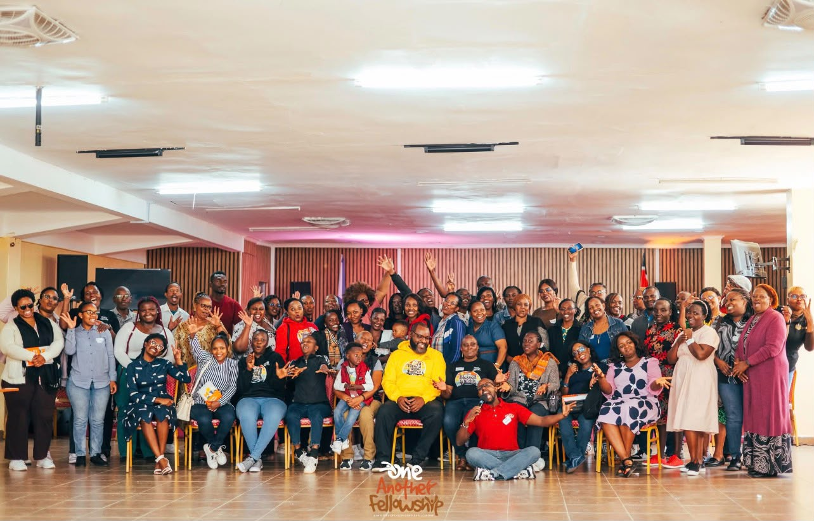

Prayer
Every session is anchored in intercession — for one another, for our households, and for the day ahead.
ONE ANOTHER FELLOWSHIP
A daily online fellowship meeting before sunrise — so that no morning has to be carried alone.

WHY IT BEGAN
One Another Fellowship grew out of Pastor James's conviction that believers were never meant to carry their days alone — and that the hour before dawn is the one hour the world has not yet claimed.
[Replace with the real story — when he started it, what prompted it, how many people were on the first call, and how it has grown since.]
"Before the day asks anything of us, we bring ourselves to God — together."
[Add anything about the character of the community — where members are joining from, how they support one another beyond the call, and what has come out of it.]
WHEN WE MEET
The gathering meets online every day of the week — opening in worship, moving into the Word, and closing in shared prayer. A rhythm built to fit before work, school, or whatever the day holds.
THE RHYTHM
Three commitments that hold, whether five people are on the call or five hundred.
Every session is anchored in intercession — for one another, for our households, and for the day ahead.
Short, practical teaching grounded in Scripture and shaped for ordinary daily life.
A community that shows up for each other — in celebration, in grief, and in the ordinary days between.
"A testimony from a member — what getting up at 5:45 every morning for this gathering has changed in their life." REPLACE WITH A REAL NAME
JOIN US
There is no membership and no cost. Request the link, set an alarm, and join the call at 5:45.